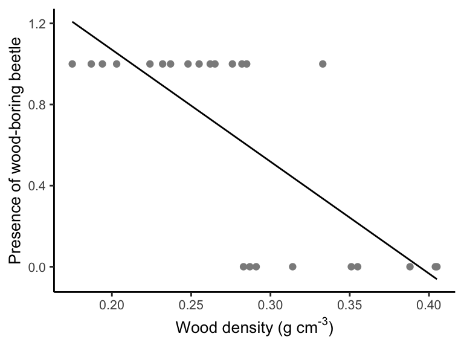
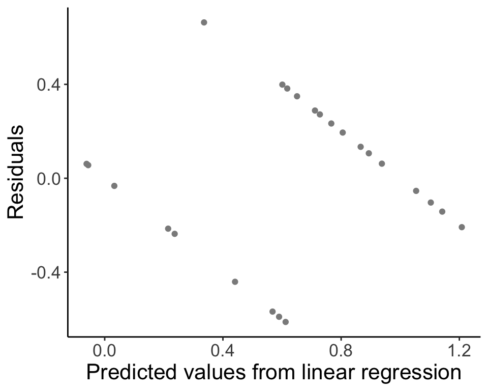
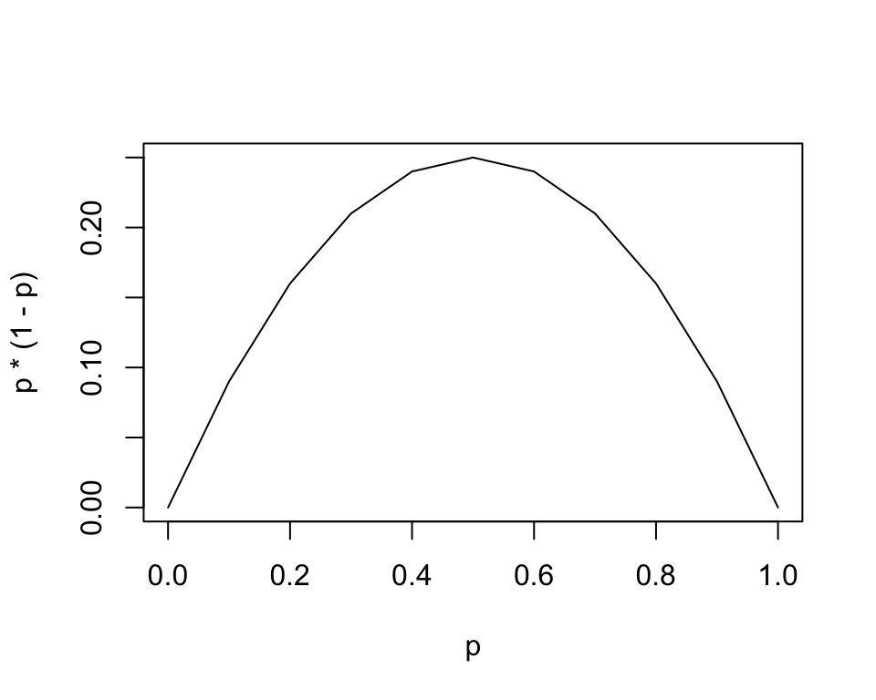

18 Week 10 Lecture
18.1 Week 10 Readings
For this week, I suggest reading Aho Section 9.20, as well as Logan Chapters 9 and 16-17. You will also need to read Siddhartha et al. (1989). This paper is another one that is quite important and should be read carefully. We will also discuss it at length in class. There are two other papers some of you will find worthwhile as well, this paper on why not to log-transform count data (please, don’t do it, it you have count data and don’t know what to do, ask me!) and another paper laying out when to use GLM and when to use OLS regression.
18.2 Week 10 outline
This week we will cover my favorite topic of all: Generalized Linear Regression and Multiple Regression!
An outline for this week’s materials:
Basic idea behind GLM
Logistic regression
Poisson regression
Deviance
LOESS/spline smoothing
Generalized additive models
Multiple regression
18.3 An example
Let’s start with a model of the presence or absence of a wood-boring beetle as a function of the wood density of decaying aspen trees in Quebec. The data look like this:
## Loading required package: tcltk
So, let’s do what we know, and we’ll fit a linear regression to the data using lm() (like we did last week). Then we’ll plot the model fit.
beetle.fit <- lm(formula = ANAT ~ Wood.density, data = beetle)
new.predictor <- list(Wood.density = seq(min(beetle$Wood.density), max(beetle$Wood.density), length.out = 24))
beetle.vals <- predict(beetle.fit, newdata = new.predictor)
beetle.predict <- data.frame(WoodDensity = new.predictor[[1]], Presence = beetle.vals)
ggplot(data = beetle, aes(x = Wood.density, y = ANAT)) + geom_point(col = "gray55") +
geom_line(data = beetle.predict, aes(x = WoodDensity, y = Presence)) +
labs(x = expression(paste("Wood density (g cm" ^ "-3", ")")), y = "Presence of wood-boring beetle", parse = TRUE) +
theme_classic() + theme(text = element_text(size = 10))
How well does this model fit, and how well does it represent the data? Let’s predict beetle presence for woody density of 0.1 g/cm3 and then 0.4 g/cm3.
## [1] 1.622327## [1] -0.03375074Last, we’ll look at the residuals for our model fit.
beetle.resid <- data.frame(PredictedValues = predict(beetle.fit), Residuals = residuals(beetle.fit))
ggplot(data = beetle.resid, aes(x = PredictedValues, y = Residuals)) + geom_point(col = "gray55") +
labs(x = "Predicted values from linear regression", y = "Residuals", parse = TRUE) +
theme_classic() + theme(text = element_text(size = text.size))
18.4 Generalized linear models
The regression models that we have been introduced to thus far all assume two things:
A linear relationship between the independent variable and the dependent variables
Normally distributed errors
Linear regression can be thought of as
\[ Y_i \sim \mathrm{N}(\beta_0 + \beta_1 X_i, \sigma^2) \]
or, equivalently,
\[ Y_i = \beta_0 + \beta_1 X_i + \epsilon_i \text{, where } \epsilon_i \sim \mathrm{N}(0, \sigma^2) \] Generalized linear models are extensions of what we have been talking about that free us from these two constraints. We can think of the above case as having two parts, the first is a model for the mean (or the expected value \(E[Y_{i}]\)).
\[ \mathrm{E}[Y_i] = \mu_i = \beta_0 + \beta_1 X_i \] and the second being a model for the variance
\[ \epsilon_i \sim \mathrm{N}(0, \sigma^2) \]
The Normal distribution is “special”. The mean (\(\mathrm{E}(X)\)) and the variance (\(\mathrm{Var}(X)\)) of the distribution are directly related to the two parameters of the distribution (\(\mu\) and \(\sigma^2\), respectively). This means the mean and variance are decoupled.
For other distributions, the parameters of the distribution often do not map uniquely to the mean and variance. GLMs allow us to model the response as some distribution (no longer has to be a Normal), and to model the parameters of that distribution (or a function of those parameters) using a linear model. In other words,
\[ \text{Response} \sim \text{Distribution}(\text{parameters}) \]
\[ g(\text{parameters}) = \beta_0 + \beta_1 X_i \]
\(g()\) is a function of the parameters. For most distributions other than the Normal, the mean and variance are linked.
\[ \epsilon_i \sim \text{Variance function}(\text{usually determined by the distribution for the mean}) \]
The function that relates the parameters of the distribution to the parameters of the linear model is called a link function (here, \(g()\)). Not all functions are acceptable, there are a few frequently used functions that serve this role (depends on the distribution of our data).
Traditional linear regression may fail to represent our data (predicting nonsensical data, etc.) in many cases in ecology and evolution. Think about the error structure you’d expect with each of these types of data:
Count data
Binary data
Proportion data
In this lecture we will go through logistic regression for binomial data and Poisson regression for Poisson (count) data. Keep in mind that other GLMs exist, specifically beta regression and gamma regression, among others.
The order of complexity (and flexibility) of the models we will be discussing is:
Standard linear regression \(<\) Generalized linear models (GLMs) \(<\) Generalized Additive Models (GAMs).
18.5 Logistic regression
Logistic regression is used to model Bernoulli or binomial response variables. Bernoulli data includes:
Survival for individual organisms
Presence/absence for individual organisms
Allele or phenotype of type 1 or type 2 for an individual
The underlying equation is
\[ Y_i \sim \mathrm{Bernoulli}(p_i) \] The response is either 0 or 1, with probability \(p\). For Bernoulli data (or binomial), the link function \(g()\) is
\[ \log \left( \frac{p_i}{1 - p_i} \right) = \log \left( ''odds'' \right) = \mathrm{logit}(p_i) \]
This function is known as the logit function and also represents the log odds of a response. By using the logit function as the link function for a logistic regression, we are saying that the logit function maps the linear model (\(\beta_0 + \beta_1 X_i\)) to the parameter(s) of the Bernoulli (or binomial). Why use the logit function? We want to map values in the range \([0, 1]\) to \([- \infty, \infty]\).
The variance function describes the distribution of the error in the GLM:
\[ \epsilon_i \sim \text{Variance function} \]
Roughly, a variance function relates the mean of the distribution to the variance (see Aho 9.20.7.3 for more details). For example, the variance function of the normal distribution is 1, \(\mathrm{V}[\theta] = 1\) (describing constant variance, i.e., homoscedasticity). Note that \(\mathrm{V}[\theta]\) is not equivalent to \(\mathrm{Var}[\theta]\), though they are related (see Appendix A.6 in Aho for details). The variance of \(Y_{i}\) for the Bernoulli, where \(n_i=1\)is given by:
\[ \mathrm{Var}(Y_i) = p_i (1 - p_i) \]
While for a normal linear regression we need errors to be the same (homoscedasctic), with a logistic regression, variation is largest around \(p = 0.5\) and shrinks to zero at the end points of \(p=0\) and \(p=1\).

The complete model for a logistic regression with Bernouilli data \(Y_i\) and covariate \(X_i\) is:
\[ Y_i \sim \mathrm{Bernoulli}(p_i) \text{, where } \log \left( \frac{p_i}{1 - p_i} \right) = \beta_0 + \beta_1 X_i \]
Keep in mind that for Bernoulli data, each data point is either a 0 or a 1 (a “success” or a “fail”). The probability \(p_{i}\) for each data point \(Y_{i}\) is a continuous variable from [0,1]. The value of the covariate \(X_{i}\) determines the probability \(p_{i}\), which in turn “weights the coin” and controls the probability that the outcome \(Y_{i}\) will be 0 or 1.
The binomial is closely related to a Bernoulli. Whereas the Bernoulli represents a single “coin flip”, the bimomial represents a collection of coin flips. To model a binomial response variable:
\[ Y_i \sim \mathrm{Binomial}(n_i, p_i) \text{, where } \log \left( \frac{p_i}{1 - p_i} \right) = \beta_0 + \beta_1 X_i \]
Now, the variance of \(Y_i\) is:
\[ \mathrm{Var}(Y_i) = n_i p_i (1 - p_i) \]
Some examples of data that are best modelled as either Bernoulli or Binomial are:
Evidence for joint damage in a rocket (this is a dataset we will tackle in the lab):
Challenger_data <- read.csv("_data/Challenger_data.csv")
plot(Challenger_data$Temp,Challenger_data$O.ring.failure,pch=16,cex=2,col=rgb(0,0.55,0.4,0.6),xlab="Temperature",ylab="Presence of at least one failed O-ring")
or the presence/absence of a species (in this case, a newt) plotted as a function of habitat suitability (data from this website):
Newt_HSI <- read.csv("_data/Newt HSI.csv")
plot(Newt_HSI$HSI,Newt_HSI$presence,pch=16,cex=2,col=rgb(0,0.55,0.4,0.3),xlab="Habitat Suitability Index",ylab="Species presence (1)/Absence (0)")
By modeling our data as it exists, we have solved four problems
The errors now reflect the binomial process
The variance reflects the binomial process
The response \(Y_i\) is now bounded \([0, 1]\)
We have maintained the information on sample size for each data point (only relevant when data are binomial)
An example with the beetle dataset (To be worked out on your own)
beetle.glm.fit <- glm(formula = ANAT ~ Wood.density, data = beetle, family = "binomial")
beetle.glm.vals <- predict(beetle.glm.fit, newdata = new.predictor, type = "response")
beetle.glm.predict <- data.frame(WoodDensity = new.predictor[[1]], Presence = beetle.glm.vals)
ggplot(data = beetle, aes(x = Wood.density, y = ANAT)) + geom_point(col = "gray55") +
geom_line(data = beetle.glm.predict, aes(x = WoodDensity, y = Presence)) +
labs(x = expression(paste("Wood density (g cm" ^ "-3", ")")), y = "Presence of wood-boring beetle", parse = TRUE) +
theme_classic() + theme(text = element_text(size = text.size))
Question: How do we interpret this GLM?
Click for Answer
With increasing wood density, the probability of finding wood-boring beetles decreases.And let’s see our predictions of the response again:
## 1
## 0.9999694## 1
## 0.004522846The predictions are \(\hat{Y}_i\), which is equal to the expected value of \(Y_i\) given \(X_i\) (\(\mathrm{E}(Y_i)\)). With a normally distributed regression, \(\hat{Y}_i = \mu_i = \beta_0 + \beta_1 X_i\). With GLMs, we have to consider the link function. Now, \(\mathrm{E}(Y_i) = p_i = \hat{Y}_i\). Thus, \(\hat{Y}_i\) are probabilities in logistic regression. This is why predict() doesn’t give us 0’s and 1’s.
## 1
## 0.9999694## 1
## 0.004522846The argument type = "response" in predict() back-transforms the predicted response using the inverse logit function.
In general, the outputs (\(\hat{Y}_i\)) from logistic regression are in logit units because of the link function we applied, \(\log \left( \frac{p_i}{1 - p_i} \right) = \beta_0 + \beta_1 X_i\). This also means that the relationship between the link function and the predictor, expressed with the parameters \(\beta_0\) and \(\beta_1\) is linear on the scale of the logit probability. We can transform the logit output to units of odds (using the exponential function) or probability (using the inverse logit function).
If the probability of an event is 0.3:
The odds of the event occurring: \(\text{odds} = \frac{0.3}{0.7} = 0.43\)
The log odds (logit) of the event occurring: \(\text{log odds} = \ln \frac{0.3}{0.7} = -0.85\)
The probability of the event (which we already knew) can be obtained using the logit using the inverse logit: \(\frac{\exp(\text{log odds})}{1 + \exp(\text{log odds})}\)

Adapted from this website.
##
## Call:
## glm(formula = ANAT ~ Wood.density, family = "binomial", data = beetle)
##
## Deviance Residuals:
## Min 1Q Median 3Q Max
## -1.5141 -0.1748 0.1050 0.4717 2.0057
##
## Coefficients:
## Estimate Std. Error z value Pr(>|z|)
## (Intercept) 15.659 6.856 2.284 0.0224 *
## Wood.density -52.632 23.838 -2.208 0.0272 *
## ---
## Signif. codes: 0 '***' 0.001 '**' 0.01 '*' 0.05 '.' 0.1 ' ' 1
##
## (Dispersion parameter for binomial family taken to be 1)
##
## Null deviance: 31.755 on 23 degrees of freedom
## Residual deviance: 14.338 on 22 degrees of freedom
## AIC: 18.338
##
## Number of Fisher Scoring iterations: 6The relationship between the link function and the predictor, \(\log \left( \frac{p_i}{1 - p_i} \right) = \beta_0 + \beta_1 X_i\), is linear on the scale of logit units (see Aho example 9.28).
If the logistic model is fit without an intercept, the best fit line predicts \(p = 0.5\) when \(X = 0\). The intercept \(\hat{\beta_0}\) shifts the probability for \(X = 0\) up or down relative to 0.5. In logit units, the probability is shifted up (approximating 1) when \(X = 0\).
## (Intercept)
## 15.6586inv.logit <- function(x) {
exp(x) / (1 + exp(x))
}
inv.logit(beetle.glm.fit$coefficients[1]) # units of probability (but no longer linear)## (Intercept)
## 0.9999998Since the parameters are linear on the scale of logit units, the logit (log odds) of beetle presence decreases by 52.6 given a 1 g/cm3 increase in wood density (decreases to almost 0 probability).
## Wood.density
## -52.6317Be aware that the significance of coefficients fit for GLMs is done using a Wald test, which relies on asymptotic (large-sample) estimates of standard errors of the coefficients. The Wald test uses a test statistic, \(z\), that is the parameter estimate divided by the estimated standard error of the parameter estimate, which is asymptotically standard normal under \(H_0 = 0\).
18.6 Fitting a GLM
To fit GLMs, we need another method besides ordinary least squares (which assumes data are normally distributed). We need to fit the parameters using maximum likelihood.
We’ll use binomial data as an example. The likelihood for binomial data, where we have \(N\) data points \(Y = \{ Y_1, Y_2, ...,Y_N \}\), each a draw from \(\mathrm{Binomial}(n_i, p_i)\):
\[ \mathcal{L}(Y_i | p_i) = \prod^N_{i = 1} \frac{n_i !}{Y_i! (n_i - Y_i)!} p_i^{Y_i} (1 - p_i)^{n_i - Y_i} \] Note that I’ll use \(\mathcal{L}\) to represent likelihood and \(\ell\) to represent log-likelihood (as in Aho).
We can express \(p_i\) as a function of the model parameters by rearranging the model equation:
\[ \log \left( \frac{p_i}{1 - p_i} \right) = \beta_0 + \beta_1 X_i \]
\[ p_i = \frac{\exp(\beta_0 + \beta_1 X_i)}{1 + \exp (\beta_0 + \beta_1 X_i)} \] So, we can substitute this expression for \(p_i\) into the likelihood (after converting to negative log-likelihood), then we get the likelihood as a function of the model parameters \(\beta_0\) and \(\beta_1\), \(\text{NLL}(\beta_0, \beta_1 | X_i)\). We can solve for the maximum likelihood estimate (MLE) for \(\hat{\beta_0}\):
\[ \frac{\partial \text{NLL}}{\partial \beta_0} = 0 \rightarrow \hat{\beta_{0}} \] \[ \frac{\partial \text{NLL}}{\partial \beta_1} = 0 \rightarrow \hat{\beta_{1}} \]
These equations cannot be solved algebraically. They must be solved numerically, for example, using iteratively weighted least squares with optimizing algorithms. When you think about the computing power needed to fit GLMs (which is no big deal today), it makes sense why it was traditional to transform your data to become normally distributed rather than model your data as it exists using GLM.
How do we interpret the coefficients?
If we fit a logistic model without an intercept, the best fit line must predict p=0.5 when X=0. So the intercept in this case shifts the probability for X=0 up or down relative to 0.5, and it does so by shifting the entire curve left and right along the x axis. This is illustrated in the figure that follows, where I have added “some amount \(i\) to the intercept for \(i=1\) to \(i=12\) and plotted the colors using the rainbow color set.
plot(seq(-20,20),exp(-3+1*seq(-20,20))/(1+exp(-3+1*seq(-20,20))),col="black",typ="l",xlab="X value",ylab="Logistic probability")
for (i in 1:12)
{
lines(seq(-20,20),exp(-3+i+1*seq(-20,20))/(1+exp(-3+i+1*seq(-20,20))),col=rainbow(15)[i])
}
abline(v=0,col="black",lty=3)
abline(h=exp(-3)/(1+exp(-3)),col="black",lty=3)
abline(h=exp(-3+5)/(1+exp(-3+5)),col=rainbow(15)[5],lty=3)
Note how the change of intercept from \(\beta_{0}=-3\) to \(\beta_{0}=5\) shifts the distribution to the left and as a result increases the value where the curve crosses the y-axis. (If the slope were negative, a shift to the left would have the opposite effect.)
The “slope” (\(\widehat{\beta_{1}}\))̂ can be interpreted as follows:
\[ e^{\widehat{\beta_{1}}}=\mbox{="change in the odds for a 1 unit change in X"} \] Another way to think about the slope term in logistic regression is that is controls how steeply the curve shifts between 0 and 1. Consider the following figure, where I reduce the slope from \(\beta_{1}=1\) to \(\beta_{1}=0.077\), Notice how the lines get flatter as the slope decreases (but without changing the intercept).
plot(seq(-20,20),exp(-3+1*seq(-20,20))/(1+exp(-3+1*seq(-20,20))),col="black",typ="l",xlab="X value",ylab="Logistic probability")
for (i in 1:12)
{
lines(seq(-20,20),exp(-3+(1-(i/13))*seq(-20,20))/(1+exp(-3+(1-(i/13))*seq(-20,20))),col=rainbow(15)[i])
}
abline(v=0,col="black",lty=3)
Important note Note that the sampling variability is fully prescribed by the model used to describe the response
\[ Y_i \sim Binomial(n_i,p_i) \]
In other words, by using a logistic model, we have implicitly stated that the variability in the response that is due to sampling variation (‘residual error’) is entirely driven by the variation that would be expected by a Binomial distribution. We do not have a separate “error model”. We have one model that contains information both on the expected (mean) value of the response for each value of the covariate, and on the amount of random noise in that response that we would expect from one data point to the next (for the same value of the covariate).
18.7 Poisson regression
Poisson regression is used to model response variables that are counts. Poisson data includes:
Number of plants is a given area
Number of offspring for an individual
Number of bacterial colonies in a Petri dish
The underlying model of the data is
\[ Y_i \sim \mathrm{Poisson}(\lambda_i) \]
Question: What are the issues with modeling Poisson data as Normal?
Click for Answer
If you fit a normal linear regression to Poisson data, your regression might predict values that are negative. Also, the variance for Poisson is equal to the mean (the Normal has no such restriction).For Poisson data, the link function \(g()\) is
\[ g (\lambda_i) = \log (\lambda_i) \] This means that we map the linear model \(\beta_0 + \beta_1 X_i\) to the parameter of the Poisson using a log function. Why use a log function? We want to map values that are non-negative integers to \([- \infty, \infty]\).
The variance of \(Y_i\) for a Poisson regression is:
\[ \mathrm{Var}(Y_i) = \lambda_i \]
The complete model for a Poisson regression with data \(Y_i\) and covariate \(X_i\) is:
\[ Y_i \sim \mathrm{Poisson}(\lambda_i) \text{, where } \log (\lambda_i) = \beta_0 + \beta_1 X_i \]
To fit this GLM using maximum likelihood, we could plug in \(\lambda_i = \exp(\beta_0 + \beta_1 X_i)\) to the likelihood function for a Poisson distributed variable.
\[ \mathcal{L}(Y_i | \lambda_i) = \prod^N_{i = 1} \frac{e^{-\lambda_i} \lambda_i^{Y_i}}{Y_i!} \] As before, we solve for the parameters \(\beta_{0}\) and \(\beta_{1}\) by plugging into the likelihood \(\lambda_{i} = e^{\beta_{0}+\beta_{1}X_{i}}\), taking the partial derivatives with respect to \(\beta_{0}\) and \(\beta_{1}\), respectively, setting those partial derivatives to zero, and solving for \(\hat{\beta_{0}}\) and \(\hat{\beta_{1}}\).
By modeling our data as it exists, we have solved three problems:
The errors now reflect the Poisson process
The variance reflects the Poisson process
The response is now restricted to non-negative integers
However, there are things you need to understand about your data before fitting a Poisson regression:
Data are often overdispersed, or the variance is larger than the mean. To resolve this, you can add an additional term to the model. These models are called quasi-poisson models.
Data may have an unusually large number of zeros. To resolve this, you can fit a zero-inflated Poisson model, which models two components, the zero component (as a logistic regression), and the Poisson regression component. These classes of models (with multiple distributions) are more generally called mixture models.
These types of Poisson regressions are common in ecology and evolution!
18.8 Deviance
When we were fitting linear regression models, we assessed model fit using the coefficient of determination \(R^{2}\). To measure fit of GLMs we use the deviance. Conceptually, it is not all that different from other fit metrics, and is analogous to the residual sum of squares for a linear model (actually it is equal to the residual sum of squares, see table 9.3 in Aho).
The deviance compares the NLL of the proposed model with the NLL of the “saturated” model. The saturated model is a model in which the predicted mean response matches each data point exactly, with one parameter for each observation. Note that the saturated model is a theoretical construct used to calculate deviance, not a model that you actually fit yourself.
Deviance is calculated as:
\[ D = 2 (\ell_{\text{saturated model}} - \ell_{\text{proposed model}}) \] If the proposed model fits the data nearly as well as the saturated model, then
\[ D | H_0 \sim \chi^2_{n - p} \] The degrees of freedom for the chi-square distribution is calculated using \(n\), the number of parameters in the saturated model (usually the number of data points), and \(p\), the number of parameters in the proposed model. The saturated model has a likelihood greater than or equal to your proposed model, so the deviance is positive. We calculate the P-value as \(P(D | H_0 \ge D_{\text{observed}})\) (notice that this is a one-tailed test). If deviance (observed test statistic) is larger than predicted by the chi-square distribution (our distribution of the test statistic under the null hypothesis), the model fit is poor.
In addition to assessing how well the model fits the data, we can use deviance to compare two models. We can use deviance to compare nested models. When one model is a reduced version of another model, the models are nested.
When comparing nested models, we no longer need to use the idea of the saturated model. We just compare the difference in deviance between the two nested models.
\[ \Delta D = 2 (\ell_{\text{larger model}} - \ell_{\text{smaller model}}) = -2 (\ell_{\text{smaller model}} - \ell_{\text{larger model}}) \] Under the null hypothesis that the smaller model is the true model:
\[ \Delta D | H_0 \sim \chi^2_{\text{additional parameters in larger model}} \] Models with more parameters have higher likelihood, because any additional parameters allow the model more “freedom” to fit the data. This means that the difference in log likelihoods (\(\ell_{\text{larger model}} - \ell_{\text{smaller model}}\)) will be positive and therefore the deviance difference will be negative.
Adding additional parameters always improves model fit. BUT, we want to know whether the fit improves above and beyond what would be expected purely by adding additional parameters to the model? We calculate the P-value as \(P(\Delta D | H_0 \ge \Delta D_{\text{observed}})\) (notice that this is a one-tailed test). If deviance (observed test statistic) is larger than predicted by the chi-square distribution (our distribution of the test statistic under the null hypothesis), the larger model fits the data above and beyond what we would expect.
We already used this concept of deviance to construct 95% confidence intervals on a maximum likelihood estimate!
From Week 4’s Problem Set, “Using your function for the negative log-likelihood, calculate the MLE for \(\lambda\) and the 95th percentile confidence interval. What would the 99th percentile confidence interval be? (4 pts) [Hint: The 95th percentile cut-off is \(0.5 \times \chi^2_{df = 1}(0.95)\) or 0.5 * qchisq(0.95, df = 1) = 1.92 in R; in other words, the NLL would have to be >1.92 higher than the minimum to fall outside the 95th percentile confidence interval. Likewise, the 99th percentile cut-off is \(0.5 \times \chi^2_{df = 1}(0.99) = 3.32\).]
So, you used the difference in NLL required to find the 95% CIs, but now you can see where that comes from.
An alternative approach to assessing the “importance” of a variable is to look at the test statistic for the model parameters the same way that we did for ordinary linear regression.
\[ z=\frac{\mbox{parameter estimate}}{\mbox{s.e. of parameter estimate}} \]
The test statistic z is approximately normal for large sample sizes.
18.9 Other methods – LOESS, splines, GAMs
Traditional regression methods are incredibly useful for predicting or explaining empirical data. However, in some situations, these methods are not flexible enough. For these cases, there are non-parametric approaches to curve fitting.
These methods may be useful for:
Visualization of patterns
Interpolating discrete data
Identifying a threshold
Prediction (e.g., niche modeling)
Keep in mind that LOESS, splines, and GAMS do not produce models that are straightforward and mechanistic. It is difficult/impossible to explain what the coefficients they produce actually mean.
LOESS (LOWESS), or locally weighted regression, is a non-parameteric method for fitting a curve through data. The dependent variable is fit in a moving fashion (like a moving window average)
\[ Y_i = g(X_i) + \epsilon_i \text{, where } \epsilon_i \sim \mathrm{N} (0, \sigma^2) \]
The only assumption about the function \(g()\) is that it is a smooth function. In LOESS, the regression curve is fit using a moving window and weighted linear regression where each point in the neighborhood is weighted according to its distance from \(X\).
\[ Y_i = \beta_0 + w_1(X_i - X_0) + w_2 (X_i - X_0)^2 + ... + w_p (X_i - X_0)^p + \epsilon_i \]
bomregions2012<-read.csv("~/Dropbox/Biometry/Week 10 Multiple regression and GLMs/Week 10 Lecture/bomregions2012.csv")
ggplot(data = bomregions2012, aes(x = Year, y = northRain)) + geom_point() + geom_smooth(method = "loess") +
labs(x = "Year", y = "Northern rainfall", parse = TRUE) +
theme(text = element_text(size = text.size)) + theme_classic()## `geom_smooth()` using formula = 'y ~ x'
A smoothing spline is a model whose metric of fit is the sum of a measure of residuals, as well as a measure of roughness:
\[\sum^n_{i = 1} (Y_i - f(X_i))^2 + h \int^{x_{\text{max}}}_{x_{\text{min}}} f''(X_i)^2 dx\]
The first term is the residual sum of squares, and the second term is a roughness penalty. \(h\) is a smoothing parameter. A larger \(h\) means a smoother line, because curves are more heavily penalized. A curve with \(h = 0\) will just interpolate the data and a curve with a very large \(h\) will fit a linear regression. The endpoints of the integral enclose the data.
ggplot(data = bomregions2012, aes(x = Year, y = northRain)) + geom_point() +
geom_smooth(method = lm, formula = y ~ splines::bs(x, 10), se = FALSE) +
labs(x = "Year", y = "Northern rainfall", parse = TRUE) +
theme(text = element_text(size = text.size)) + theme_classic()
Generalized additive models (GAMs) allow us specify both smoothing and conventional parametric terms for models. GAMs are compatible with nonlinearity and nonnormal errors by using link functions (like with GLMs). With one covariate:
\[Y = \beta_0 + g(X)\]
This function, \(g()\), could be smoothing splines, LOESS smoothers, kernel smoothers, etc.
ggplot(data = bomregions2012, aes(x = Year, y = northRain)) + geom_point() +
geom_smooth(method = "gam", formula = y ~ s(x, bs = "cs")) +
labs(x = "Year", y = "Northern rainfall", parse = TRUE) +
theme(text = element_text(size = text.size)) + theme_classic()
Personally, I really dislike GAMs and would discourage their use. GAMs rarely if ever provide information that you couldn’t see with the naked eye, and their use lends an air of statistical rigor to an analysis that is usually unjustified. I often see GAMs used as a crutch to avoid thinking seriously about the statistical model, and it tends to produce features that are artifacts of the data rather than meaningful information about the underlying process.
Multiple regression is not fundamentally different from what we have discussed in the past three weeks. The major differences are that we need to be careful about what covariates we include, as well as our interpretations of linear model coefficients. Note that covariates, predictors, and explanatory variables all refer to the same thing, what I’ve referred to in linear regression as \(X_i\).
Multiple regression is useful to:
Build better predictive models
Investigate the relative effects of each covariate standardized across the effects of the other covariates. With multiple regression, we use partial regression lines, where the slope of any single partial regression line is the effect of that covariate holding all the other covariates at their mean value.
\[ Y_i = \beta_0 + \beta_1 X_{1i} + \beta_2 X_{2i} + ... + \beta_{p - 1} X_{(p - 1)i} + \epsilon_i \]
Where \(Y_i\) is the response for the \(i^{\text{th}}\) data point, \(X_{(p - 1)i}\) is the covariate \(p - 1\) for the \(i^{\text{th}}\) data point. There are \(p\) parameters in the model (\(p - 1\) partial regression slopes and one intercept).
Note that we could write this is matrix form like we did with the linear models in Week 8:
\[\mathbf{Y} = \begin{bmatrix} Y_1 \\ Y_2 \\ \vdots \\ Y_n \end{bmatrix} \mathbf{X} = \begin{bmatrix} 1 & X_{11} & ... & X_{(p - 1)1} \\ 1 & X_{12} & ... & X_{(p - 1)2} \\ 1 & \vdots & \ddots & \vdots \\ 1 & X_{1n} & ... & X_{(p - 1)n} \end{bmatrix} \mathbf{b} = \begin{bmatrix} \beta_0 \\ \beta_1 \\ \vdots \\ \beta_{p - 1} \end{bmatrix} \mathbf{e} = \begin{bmatrix} \epsilon_1 \\ \epsilon_2 \\ \vdots \\ \epsilon_n \end{bmatrix}\]
The null hypothesis for each of the regression coefficients is: \(\beta_0 = 0\) (the intercept is equal to zero), \(\beta_1 = 0\), …, \(\beta_{p - 1} = 0\) (the partial regression slope of \(X_{p - 1}\) on \(Y\) is zero). Multiple regression is fit the exact same way as simple linear regression (see Aho 9.5.1).
The first three assumptions are the same as linear regression with one covariate. The final assumption is new and relevant only with multiple covariates.
Linearity (A linear model appropriately describes the relationship between \(X\) and \(Y\))
Normality (For any given value of \(X\), the sampled \(Y\) values are independent with normally distributed errors)
Homogeneity of variances (Variances are constant along the regression line)
The covariates, \(X_1, X_2, ..., X_{p-1}\), are uncorrelated. Multicollinearity occurs when covariates are correlated with one another.
Multicollinearity does NOT bias parameter estimates! But it still can be a big problem.
It causes instability of estimated partial regression slopes, meaning that small changes in the data cause large changes in the parameter estimates.
It inflates standard errors and confidence intervals of parameter estimates, increasing the chance of a Type II error. ANother way to say this is that multicollinearity reduces power, or increases the chance that you won’t find a significant result even if the null hypothesis is false.
For simple linear regression with a single covariate, the slope parameter had the following sampling distribution:
\[ \hat{\beta_1} \sim \mathrm{N} {\left( \beta_1, \frac{\sigma_\epsilon^2}{\sum_{i = 1}^n (X_i - \bar{X})^2} \right)} \]
Review Question: What is \(\sigma_\epsilon^2\)?
Click for Answer
The population error variance (the expected value of squared errors). In practice, we estimate this as \(s^2_\epsilon\) from the data. It’s also called the mean squared error.When we have multiple covariates, the sampling distribution for the partial slope parameter (the slope for the \(X_1\) covariate, for example) is:
\[ \hat{\beta_1} \sim \mathrm{N} {\left ( \beta_1, \frac{\sigma_\epsilon^2}{\sum_{i = 1}^n (X_{1i} - \bar{X_1})^2} \frac{1}{1 - R^2_1} \right)} \]
where \(R^2_1\) is the multiple coefficient of determination, or the fraction of variance in the covariate 1 explained by all other covariates, \(X_1 \sim X_2 + X_3 + ... + X_{p - 1}\).
The bigger that \(R^2_1\) is, the larger the standard error of \(\hat{\beta_1}\):
## [1] 1.111111## [1] 2.5## [1] 10How do we diagnose multicollinearity?
Look at the pairwise correlations between all of he predictor variables either by a correlation matrix or by a scatterplot matrix (try the package
corrplot)Calculate the Variance Inflation Factor. A large VIF may be > 5 or > 10 (depends who you ask). Two covariates have to be very correlated for this to be an issue.
\[ \text{VIF} = \frac{1}{1 - R^2_{p - 1}} \] 3. Do a principal components analysis (PCA) to see which covariates are highly correlated (we will get into this Week 14).
How do we deal with multicollinearity?
If the goal of your model is prediction, multicollinearity isn’t necessarily a problem. It may be best to leave all predictors in the model, even if they are collinear.
Remove the highly correlated predictors, starting with the least biologically interesting ones
Do a PCA, because the principal components are guaranteed to be orthogonal (completely uncorrelated). However, this does make hypothesis testing difficult, because the parameters will be combinations of the original variables.
How can we test hypotheses about model parameters in multiple regression?
- Compare individual parameters using a t-test
\[ \frac{\hat{\beta_1} - \beta_{1 | H_0}}{\text{SE}_{\hat{\beta_1}}} \sim t_{df} \]
How many degrees of freedom do we have for each model parameter? Let’s jump back to the distribution for the partial slope of covariate \(X_1\) out of \(p - 1\) total covariates. In our estimate of the unknown error variance \(\sigma^2_\epsilon\) (back from Week 9 lecture):
\[ s_\epsilon^2 = \frac{1}{n - p} \sum_{i = 1}^n (Y_i - \hat{Y_i})^2 \]
Calculating \(\hat{Y_i}\) requires \(\bar{Y}\) as well as the mean of each covariate (\(\bar{X_1}, \bar{X_2}, ..., \bar{X}_{p - 1}\)), so we lose \(p\) degrees of freedom.
- Compare the full model to the reduced model in which that particular term has been removed:
\[ \text{Full model: } Y_i = \beta_0 + \beta_1 X_{1i} + \beta_2 X_{2i} + \beta_3 X_{3i} + \beta_4 X_{4i} + \epsilon_i \]
\[ \text{Reduced model: } Y_i = \beta_0 + \beta_2 X_{2i} + \beta_3 X_{3i} + \beta_4 X_{4i} + \epsilon_i \]
Question: How can we compare these two models?